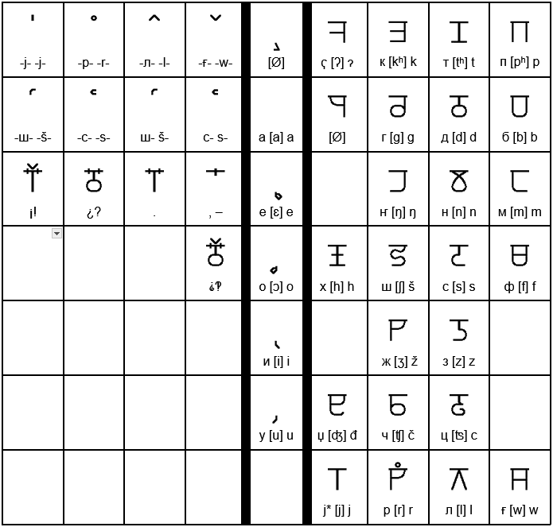

While 'Alphabet' isn't a 1:1 of ‹Azboj›, kalbjá azbojaš are the written units of Calvic. While it's main azboj is cyrillic, or karil azboj, there are three azbojaš.
| Aa axjone |
Bb brana |
Cc cama 'ts' |
Čč čaka 'ch' |
Dd doja |
Đđ đana 'dj' |
Ee Emos 'eh' |
| Ff fruka |
Gg ganasím |
Hh hami |
Ii iwa 'ee' |
Jj kajni 'y' |
Kk katán |
Ll lanja |
| Mm maxa |
Nn naglaxa |
Ŋŋ zaŋ 'ng' |
Oo očani 'oh' |
Pp patori |
Rr arbi |
Ss sipsi |
| Šš šini 'sh' |
Tt tama |
Uu uto 'oo' |
Ww wala |
Xx xi 'x' |
Zz zuti |
Žž žiwa 'zh' |
| ɂ aɂon '-' |
PSps psiti 'ps' |
STst ástamo |
JAja jaxo 'yah' |
JEje jego 'yeh' |
Jojo jođ 'yoh' |
Juju jula 'yoo' |
The first row has the letters that are used in this azboj, and the second row has letter names, which are also words elsewhere, of the letters. Some also have phonics next to them to clarify how to say them. One big difference is that every letter has only one sound per letter, with the exception of some digraphs. Those two letter combinations are shown here because they show up in the Cyrillic Writing, the primary writing. 'Ɂ' is used for a very breif 'hard-pause', which is only heard in the phrase 'uh-oh' in english. Keep in mind that you should pronounce the 't', 'd', and 'l' as though they appeared at the start of a word, as to pronunce them fully.
| Аа а́ѯәне |
Бб брана |
Гг ганаси́м |
Дд доя |
Ее емос |
Ёё ёго |
Ғғ ғала |
| Жж жиға |
Зз зути |
Ии иға |
Јј кајни |
Кк ката́н |
Лл ланя |
Мм маѯа |
| Нн наглаѯа |
Ҥҥ заҥ |
Оо очани |
Әә әџ |
Ѯѯ ѯи |
Пп патори |
Ҁҁ аҁон |
| Рр арби |
Сс сиѱи |
Тт тама |
Уу уто |
Фф фрука |
Хх хами |
Ѱѱ ѱити |
| Цц цама |
Чч чака |
Џџ џана |
Шш шини |
Щщ а́щамо |
Юю юла |
Яя яѯо |
Kalba karila is the main writng system of Calvic. I showed you the Roman first because it would make it easier to teach the Cyrillic. Compare their names to find which from which. Now that I have given you both of these, I should explain the only rule where the sound of letters will be different than their description. The (j) letters («ј я ё ә ю» or «j ja je jo ju») have the ability to alter the pronunciation of the letter before them. The first thing it can do is change the pronunciation, and silence the (j).
| Before: | After: |
| г (g) | 'y' |
| ғ (w) | 'vy' |
| ѯ (x) | 'ksh' |
| т (t) | 'tch' |
| ѱ (ps) | 'psh' |
| щ (st) | 'sht' |
The second that can happen is that the (j) falls silent with no changes occurring. This is because the combination of sounds suggested simply cannot occur, and accordingly the weakest sound in the cluster is dropped.
| ж (ž) | ҥ (ŋ) | ҁ (7) | р (r) |
| ф (f) | ч (č) | џ (đ) | ш (š) |
|  |
Dolspaŋ is unlike the two above. Firstly, it is written from right to left. Secondly, only consonants get full letters, with vowels being made to me small markings below. Thirdly, many of Calvic's Blends, including the clusters talked about above and their (j)ed forms being depicted through markings above it. Fourthly, Dolspaŋ is phonetic. instead of ‹xj› it's ‹kš›, or its equivalent, anyways. This is why, between the Karila and Romana, there are little symbols that people who study language use, to show that the characters above are very literal. However, since computers can't yet type it, it only exists in physical writing, and what is here is but a very mechanical depiction.